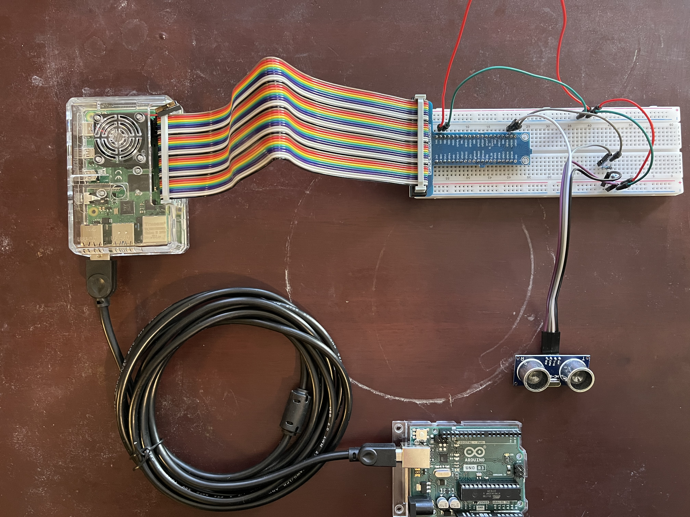

Inspired from the BBC Series Dr. Who, a security appliance, K-9, has been started. It is built of Raspberry Pi and Arduino Technology. Scripts are made in both Python and C. Scripts are available on request, please email me at your convenience if you have interest. Pictured before begins the experimentation phase of the technologies, a motion range sensor.
